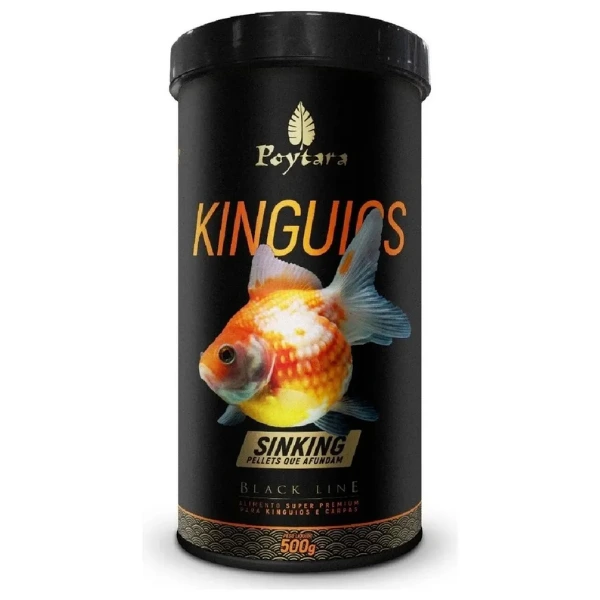

Comida Para Peixes Kinguio Sinking Black 500g Envio Imediato

Detalhes do Produto
- Como usar
- Ofereça Poytara Kinguios Sinking Black Line de duas a quatro vezes ao dia.
- Utilize quantidade suficiente para o completo consumo em poucos minutos ou até que cesse a voracidade dos peixes.
- Espécies indicadas
- Kinguios
- Carpas filhotes ou juvenis
- Função nutricional
- Composição rica em lipídeos, fosfolipídios e ingredientes vegetais que intensificam as cores dos peixes.
- Promove excelente relação proteína X energia, contribuindo para a regulação da taxa de ingestão e saúde dos peixes.
- Inclui farinha de peixe, crustáceos e moluscos de alta qualidade.
- Alta inclusão de ervilha e spirulina, que favorecem digestão e absorção de nutrientes sem causar constipações.
- Ingredientes principais
- Farinha de Peixe, Farinha de Salmão, Farinha de Crustáceos, Farinha de Lula, Farinha de Insetos
- Ervilha, Spirulina, Gérmen de Trigo, Fibra de Beterraba, Centeio, Albumina
- Farinha de Linhaça, Farinha de Alga Schizochytrium, Lignocelulose
- Óleos e extratos
- Óleo de Salmão, Óleo de Alho, Extratos Vegetais, Extratos de Levedura
- Aditivos funcionais
- L-Treonina, L-Triptofano, Nucleotídeos, Fosfolipídios, Extrato de Yucca
- Algas Marinhas Calcárias, Páprica, Hibiscus, Hortelã
- Probiótico, Prebiótico, Multienzimático
- Vitaminas e minerais
- Vitamina A, D3, E, K3, B1, B2, B6, B12, C
- Ácido Nicotínico, Pantotênico, Fólico, Biotina, Inositol
- Cloreto de Colina, Sulfato de Cobalto, Iodato de Cálcio, Ferro, Manganês, Zinco, Selênio
- Sulfato de Magnésio, Cloreto de Potássio
- Conservantes e antioxidantes
- Ácido Propiônico (conservante)
- Vitamina E (antioxidante)
- Adsorvente de Micotoxinas